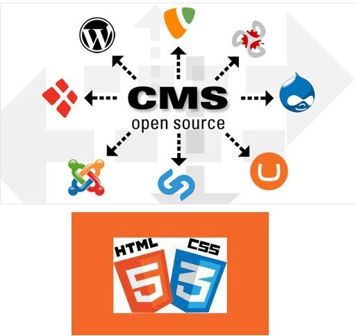

Utilisation de recherche et de formation
Le partage de la connaissance, de la convivialité et de la création de valeur.
Utilisation du logiciel PAO (en cours de réalisation)
C'est le ciment de toute relation pérenne et bienveillante.
Animation des réseaux de communication
Le partage de la connaissance, de la convivialité et de la création de valeur.
Échange, partage transmettre des informatons.
C'est le ciment de toute relation pérenne et bienveillante.

Planification et organisation sur les réseaux sociaux
Le partage de la connaissance, de la convivialité et de la création de valeur.
Design du contenu sur le site
Lorsque l'on parle de web design, on fait référence au look général d'un site web.
C'est le processus de planification et de construction des éléments de votre site internet,
de la structure à la mise en page, en passant par les couleurs, les polices, et les images.

Création du contenu et multimédia (Texte, Photo)
La création de contenu, c'est quoi? Il s'agit de produire du contenu qui attire et retient l'attention d'une cible.
La création de contenu permet à une marque de se distinguer à l'aide de textes, de vidéos, de photos et d'infographies,
entre autres, qui ont une valeur pour cette cible.
Création du site web : HTML, CSS, CMS
Le HTML / CSS sont les langages de base indisponsable qui composent toutes les pages web, ce sont les deux premiers langages que vous devez apprendre si vous voulez vous lancer dans la création de
HTML signifie Hyper Text Markup Language définit la structure et le contenu d'une page, il indique au navigateur ce qui se trouve sur votre page, par exemple : image, video, audio, en tête, etc...
Le CSS signife ascading Style Sheets, ou Feuilles de style en cascade en français pour décrit au navigateur comment les éléments HTML doivent être affichés à l'écran : style, couleur, arrière plan, taille de police, ect...
Le CMS signifie Content Management System, ou système de gestion de contenu en français. Il permet de gérer le contenu en tout genre d’un site internet. Très utile pour travailler sa visibilité sur la toile.

Corriger l'erreur du site avec une CMS
Le partage de la connaissance, de la convivialité et de la création de valeur.
Optimisation du site
C'est le ciment de toute relation pérenne et bienveillante.
Collaboration et travail autonome
Le partage de la connaissance, de la convivialité et de la création de valeur.
Langue : Français et Anglais (Lire)
C'est le ciment de toute relation pérenne et bienveillante.